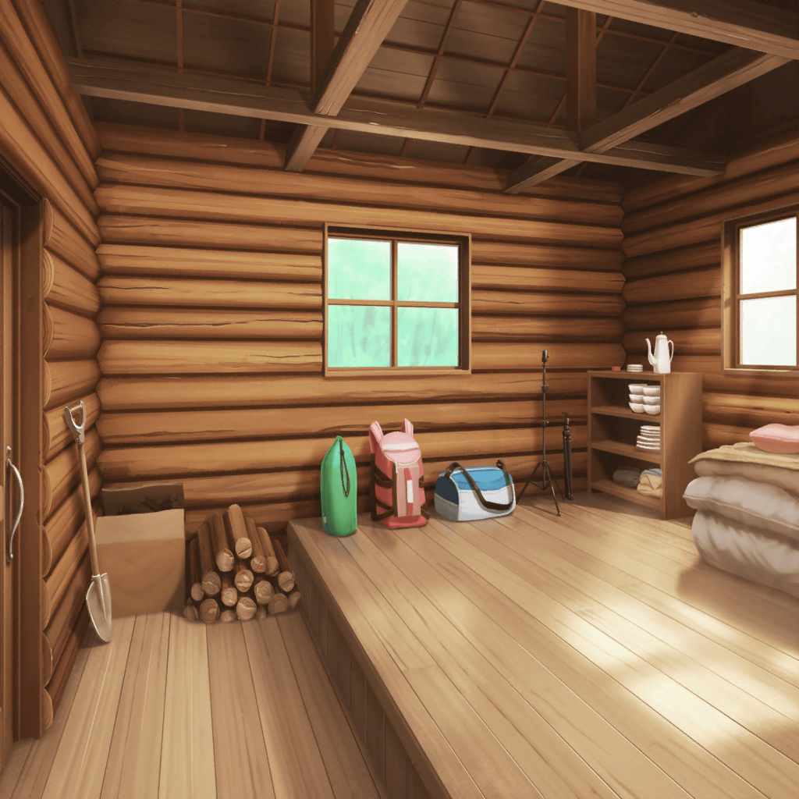

無人島 砂浜
日菜
わぁ、すっごくキレイな海だねー！
日菜
人もいないし、パスパレプライベートビーチって感じー。
えへへ、なんか、るんってしてきちゃった♪
千聖
スタッフさんに用意してもらえてるのは飲み水だけみたいね。
他のものは自分達でなんとかしないと……
千聖
（同行してるスタッフさん必要最低限、
基本的にサポートなしというルール……
思ったより本格的だわ）
麻弥
やっぱり南にある島だけあって、
ジメジメとまとわりつくような暑さですね
麻弥
……って、彩さん？
さっきからソワソワして、どうしたんですか？
彩
あ、あはは……
ほら、さっきスタッフさんが携帯を預かりに来たでしょ？
いつも持ってるものがないと、なんだか落ち着かなくて
千聖
スタッフさんが、私物は各自１つしか
持ち込んではいけないと言っていたものね
イヴ
チサトさんは何を持ってきたんですか？
千聖
私はふわふわのブランケットよ。
固い地面に座る時や、休憩の時に役立つかなと思って
日菜
あたしはおねーちゃんの写真！
これさえあれば、どこでだってスヤスヤ寝れちゃうもん♪
麻弥
あ、あはは……
日菜さんって、本当に紗夜さんのことが
好きなんですね
彩
それで……無人島に到着したけど、
これから私達、何をすればいいんだろ？
麻弥
確かスタッフさん達が
用意したミッションをクリアしていくんですよね？
イヴ
ミッションをクリア……
真剣白刃取り、などでしょうか？
彩
え！？
き、危険すぎない？
もし、失敗したら……！
千聖
そこまで無茶なミッションはおそらくないでしょうけど、
ある程度の覚悟は必要そうね
彩
そ、そうだよね！
さすがに真剣白刃取りはしないよねっ
彩
よしっ！ みんな、絶対生きて帰ろうね！
彩
それで絶対新曲発売しよう！
私、頑張るからねっ！
日菜・千聖・イヴ・麻弥
…………
彩
……あ、あれ？
みんな、どうしたの？
千聖
……いえ。
彩ちゃんは頑張らなくても、大丈夫よ。
その……あまり無理はしないでね
彩
ち、千聖ちゃん……？
それってどういう意味！？
日菜
あー……彩ちゃんはなんかほら？
アレだし
彩
あ、アレって何？
麻弥
彩さん、何かあったら、
すぐにジブンに相談してくださいね！
不測の事態が起きても、ジブンが対応してみせます！
イヴ
私もです！
アヤさんに何かあったら、私がこの木刀で守ります！
日菜
イヴちゃんが持ってきたものって、木刀だったんだー。
カッコイイー！
イヴ
はいっ！
刀はブシの魂ですから！
千聖
木刀……
まあ、イヴちゃんらしいと言えばらしいけど……
千聖
とにかく、みんなで彩ちゃんをフォローしていきましょう。
決して無理は禁物よ？
日菜・麻弥・イヴ
おー！
彩
み、みんな……
守ってくれるのは、とっても嬉しいけど……
な、なんか複雑だよぉ～！！
千聖
……あら？ スタッフさん達が集まってるわね。
そろそろ撮影開始のようだけれど、
もう少し具体的に内容の説明をしていただけますか？
スタッフA
そのあたりは撮影しながら必要であればご説明しますから！
千聖
（な、なんていい加減なの……
この企画、本当に大丈夫なのかしら……？）
スタッフA
それじゃあ……はい！ カメラ回りました！
スタッフA
パスパレのみなさん、こんにちは！
では早速、最初のミッションを……
麻弥
ちょっといいでしょうか？
ミッションの前に島を１周させてもらえると嬉しいです。
規模感を知っておきたいので
彩
それって、もしかして森の中にも入るってこと……？
だ、大丈夫かな？
もし、何か出てきたりしたら……
麻弥
確かに、危険はあるかも知れません。
でも、それならなおさら、
どこが危険なのかを知っておくのも大事だと思います
麻弥
もしかしたら今いるこの海岸が
１番危険っていう可能性もあるかも知れませんから
千聖
なるほど……地の利を得る、ってことね
日菜
あたしはサンセーだよ。
みんなでお散歩するの、絶対楽しいもん♪
千聖
それじゃあ、麻弥ちゃんの言う通り、
まずは島を１周しましょうか
千聖
（……あら？ スタッフさん達の様子が変ね）
スタッフA
オイ……大丈夫か？
台本によると、『島を探索してみよう』っていうのが
最初のミッションだったけど……
スタッフB
まあ、編集でなんとかなるさ。
それにしても、あの大和麻弥って子、すごいな。
こんな状況で、ずいぶん冷静に判断できるもんだ
千聖
（どうやら出す予定だったミッションを
麻弥ちゃんに先回りして言われちゃったみたいね）
麻弥
それじゃあ、直射日光をさけて森を通っていきましょう。
強い日差しに当たっていると、それだけで体力が
奪われてしまいますから

無人島 森の中
麻弥
……ひとまず、これで島は１周しましたね。
特に危険なところはなさそうでよかったです。
それじゃあ、今度は島の内側を調べてみましょう！
彩
うん、わかった！
……あれ？ みんな、見て！
向こう側に何か見えるよ！

麻弥
あれは……小屋でしょうか？
中を調べて安全そうなら、あそこを拠点にしましょうか
日菜
よーし！
じゃあ、あたしが１番！
それ～！
彩
わっ、日菜ちゃん、
先に行ったら危ないよ！
ま、待って～！！

無人島 小屋の中
千聖
少し埃っぽいけど、特に危険はなさそうね。
椅子やテーブルがそのままになっているし、
少し前まで人が住んでいたのかしら？
イヴ
ここならマヤさんの言う通り、拠点にできそうですね！
麻弥
ええ、そうですね。
それじゃあ、みなさん、
少しここで休憩して、これからのことを決めま――
スタッフA
はい！ そこまで！
麻弥
……え？
スタッフA
（このままじゃまた先回りされるからな……）
スタッフA
ここでみなさんお待ちかねの、第１ミッションです！